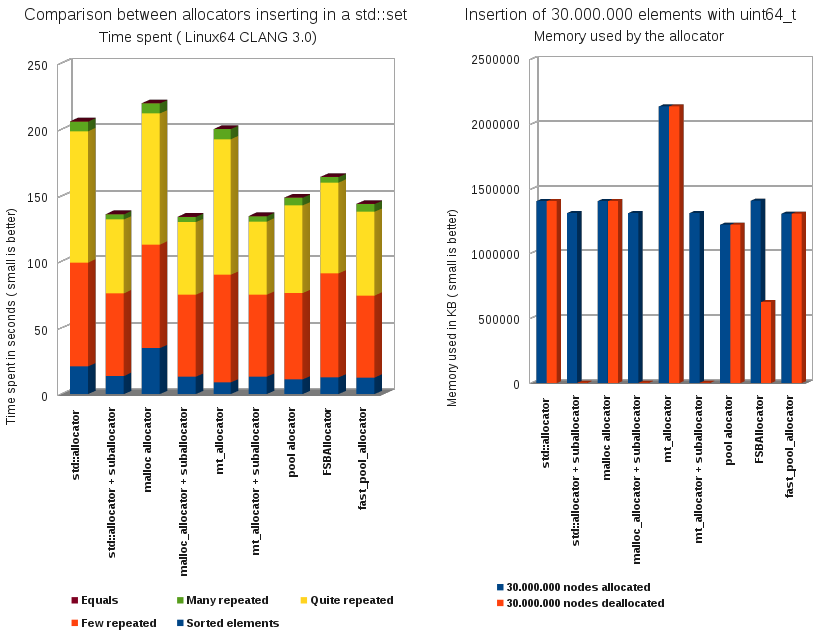

The [
Counter Tree + Suballocator ] Library
Francisco Jose Tapia
Copyright © 2010-2012 Francisco Jose Tapia
4.6.- Benchmarks
(GCC 4.7, VC++ 10, CLANG 3.0)
The test had been done with GCC 4.7 (64 bits) and run on a QuadCore 2.4 GHz ( 8 GB of Dual Channel 1066 MHz
Memory) with the C++0x options activated, and with the highest level of optimization.
IMPORTANT! The results of the benchmarks have a great dependency of the
processor, and the size of the cache.
Allocate 50.000.000 elements of uint64_t
The benchmark of the suballocator is a vector of pointers to elements uint64_t. The size of the vector is
50.000.000 elements. This vector is obtained from dynamic memory, and is used for to link the elements obtained
from the allocator.The allocator is selected from a menu .
The left graph shows the time of the 5 operations over the allocator . We take the time with the function
clock( )
- Allocate 50000000 elements of 64 bits
- Deallocate all from the last to the first
- Deallocate all from the first to the last
- Deallocate odd elements
- Deallocate odds elements and reallocate
The right graph shows the memory used by the program in 3 moments:
- The vector of pointers had been created and 50.000.000 elements uint64_t allocated
- The vector of pointers had been created and 50.000.000 elements uint64_t had been deallocated
- The vector of pointers had been deleted and 50.000.000 elements uint64_t had been deallocated
This second graph shows the memory consumption, and the capability of the allocators for to return memory to the
operating system and decrease the memory used by the program
Allocate 30.000.000 elements uint64_t and insert in
a std::set
The second Benchmark is the insertion of several collections of 30.000.000 numbers of 64 bits in a std::tree.
You select the allocator from a menu
This graph is very important, because show other important property
of the allocators. The time spend by the allocator in the insertion of a number in the set is less than 1%.
As you can see we save around 35%.of the time The allocator always provide the first position free. This
provide us a very compact data area, and this improve the cache performance.
The left graph is the time consumed, and the right is the memory used by the allocator when the 30.000.000
elements are allocated , and after when are freed, and the std::set is empty. This shows the memory
consumption, and the capability of the allocators for to return memory to the operating system and decrease
the memory used by the program
* The source code of malloc_allocator, mt_allocator and pool_allocator is in a directory of the GCC compiler (
In my computer /usr/include/c++/4.7/ext). Check if your CLANG compiler
access to this directory, for to compile the benchmark programs
4.6.1.-
Benchmarks GCC 4.7
4.6.2.- Benchmarks
VC++ 12CTP
4.6.3.- Benchmarks
CLANG 3.3
* The source code of malloc_allocator, mt_allocator and pool_allocator is in a directory of the GCC compiler (
In my computer /usr/include/c++/4.7/ext). Check if your CLANG compiler
access to this directory, for to compile the benchmark programs



 Boost C++
Libraries
Boost C++
Libraries